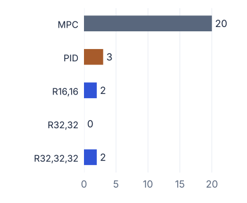
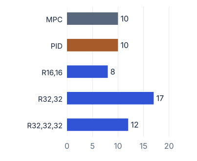
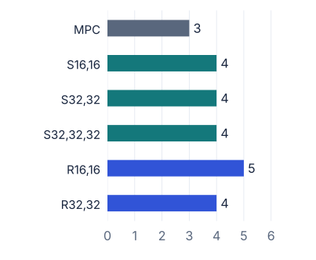
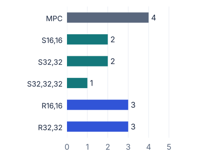

A controller repeatedly chooses an action to keep a system near a target. In practice, its measurements can be noisy and the system may respond differently from the model used to design it.
I compared neural-network policies with model predictive control (MPC) to understand which uncertainties each approach could tolerate, how it failed, and what that robustness cost in computation.
02Study design
I started with simple systems to isolate the differences between controllers, then tested whether the resulting design lessons held on a harder nonlinear problem.
Stage 1
Nine first-order systems
The benchmark combined stable, integrating and unstable systems with three zero choices. This included systems whose output initially moves away from the target.
Each candidate faced the same nominal tests before any stress was added. Five of the ten controllers passed all nine systems and continued to the robustness comparisons.
How the nine systems were constructed
Three pole classes—stable, integrator and unstable—were crossed with three zero choices: no zero, a left-half-plane zero and a right-half-plane zero. This 3 × 3 design isolated differences in the underlying dynamics while keeping the models simple.
Stage 2
A nonlinear cart-pole
I designed and trained controllers using a linear approximation near upright, then evaluated them unchanged on the nonlinear simulation.
Each controller faced 18 starting conditions: three cart positions × six pole angles. Every run lasted eight seconds and tested local balancing.
Move the cart to keep the pole upright. Schematic of the task, not a measured trajectory.
The policies were trained for the cart-pole. This stage tested the transfer of design lessons and linear-to-nonlinear behaviour, rather than reusing first-order model weights.
03Controllers and training
Model predictive control
Uses a system model to predict future behaviour and optimise a sequence of actions. It applies the first action, takes a new measurement and repeats the optimisation.
Learned PID-feature policy
Learns weights for a small set of error signals. In the first-order study, the resulting controller is a proportional–integral–derivative (PID) law with gains learned by optimisation.
Neural-network policy
Maps measured signals to an action using a multilayer perceptron (MLP). I varied its inputs, hidden-layer widths and depth. After training, each action requires a forward pass through fixed weights.
Training directly in Python and NumPy
I implemented the training code, including gradient propagation through both the policy and the simulated dynamics, with Adam used to update the parameters.
1Run a trajectory
The policy chooses actions while the simulated system evolves.
2Measure the loss
Penalise tracking error and abrupt changes in the control action.
3Update the policy
Backpropagate through the rollout and adjust the parameters.
The objective matched the MPC cost structure. Separate validation rollouts supported model selection, and the deployed policies remained fixed during evaluation.
Training settings and terminology
First-order training: 200-step, 20-second rollouts, with a separate policy for each plant and variant. MLP training included noise and mild plant variation; the hidden-lag test was not part of that training distribution.
Cart-pole training: 400-step, eight-second rollouts on the linearised model, using the same quadratic state-regulation objective as MPC. MLP training included gradient clipping, validation and early stopping.
Method: the report groups these policies under reinforcement learning. The implementation uses direct, model-based policy optimisation through a differentiable simulation, rather than Q-learning or actor–critic updates.
04The experiment software
When the initial network underperformed, I needed to compare different architectures without repeatedly rewriting the evaluation scripts. I built a shared configuration manifest for controller variants, network shapes, training rollouts and test settings.
The pipeline could train new policies or reuse saved weights, run experiments concurrently, and evaluate every controller through the same sequence:
Configure and trainDefine the inputs, architecture and scenarios; validate the policy and save the selected weights.
Check nominal behaviourRun every required baseline case. Exclude controllers that already fail without added stress.
Increase the stressRaise noise or unmodelled lag, record the first failure and stop testing that controller at higher levels.
Compare the evidenceReport tracking metrics, failure reasons and controller execution time separately from simulation overhead.
Separate useful context from network size
I compared compact inputs with richer inputs containing a short history of observations, errors and actions. Both used only information available at the current time. This made it possible to test whether more context helped, independently of adding more neurons.
Input families and architecture sweep
The first-order study crossed two input families with four hidden-layer configurations: (16,16), (32,32), (16,16,16) and (32,32,32). The numbers denote neurons in successive hidden layers. Hidden layers used tanh activations and the output layer was linear.
The cart-pole used task-specific state inputs and history-augmented alternatives, evaluated through its own nominal screen and stress tests.
05What the stress tests changed
Measurement noise
The system is unchanged, but the controller receives imperfect observations. A larger multiplier increases the measurement corruption.
Unmodelled actuator lag
The action reaches the system more slowly than expected. I added lag stages without changing the model used to design the controller.
A threshold is the highest tested level that passed every required case before the first failure: all nine first-order systems or all 18 cart-pole initial conditions.
Pass criteria and how to read the scales
Cart-pole runs had to remain within a 20° pole-angle limit, finish within 2° of upright and 0.10 m of the target cart position, and satisfy a terminal velocity criterion. Non-finite values also caused failure.
First-order tests checked peak error, control effort and growing late tracking error. Disturbance traces were reused across controllers at each plant and stress level.
Noise multipliers scale a baseline specific to each benchmark. Lag order counts cascaded stages at a fixed pole rate of 100 rad/s. These are separate experimental scales and should not be compared as a single measure of task difficulty.
06Results
Switch between the benchmarks to compare their reported thresholds. The rankings reversed: MPC led on measurement noise in the first-order study, while neural policies led on the cart-pole. Unmodelled lag produced the opposite pattern.
Chart labels: R = rich inputs with short history; S = compact state inputs; PID = learned PID-feature policy. Numbers such as 16,16 are hidden-layer widths.
Nine first-order systems
MPC passed the full tested measurement-noise range up to 20×. The rich-input (32,32) MLP tolerated the most unmodelled lag: order 17, compared with 10 for MPC.
MPCLearned PIDRich-input MLP
Measurement noise
Maximum baseline multiplier passed

MPC20
PID3
R16,162
R32,320
R32,32,322
Higher = more tested stress passed.
Unmodelled actuator lag
Maximum lag order passed

MPC10
PID10
R16,168
R32,3217
R32,32,3212
Higher = more tested stress passed.
All nine plants had to pass. The 20× MPC noise value reaches the tested ceiling, so it does not establish a failure boundary. A zero means the nominal case passed but the first non-zero tested noise level did not.
View exact values and source
Nine first-order systems — Tables 2–3, pp. 29–30
Controller
Noise multiplier
Lag order
MPC
20×
10
Learned PID-feature policy
3×
10
Rich-input MLP (16,16)
2×
8
Rich-input MLP (32,32)
0×
17
Rich-input MLP (32,32,32)
2×
12
Nonlinear cart-pole
The rich-input (16,16) MLP led under measurement noise at 5×, compared with 3× for MPC. MPC led under unmodelled lag at order 4, compared with a best neural result of 3.
MPCRich-input MLPState-input MLP
Measurement noise
Maximum baseline multiplier passed

MPC3
S16,164
S32,324
S32,32,324
R16,165
R32,324
Higher = more tested stress passed.
Unmodelled actuator lag
Maximum lag order passed

MPC4
S16,162
S32,322
S32,32,321
R16,163
R32,323
Higher = more tested stress passed.
All 18 local initial conditions had to pass. The PID-feature policy and rich-input (32,32,32) MLP were excluded by nominal screening; they have no stress thresholds in this chart.
View exact values and source
Nonlinear cart-pole — Table 5, p. 36
Controller
Noise multiplier
Lag order
MPC
3×
4
State-input MLP (16,16)
4×
2
State-input MLP (32,32)
4×
2
State-input MLP (32,32,32)
4×
1
Rich-input MLP (16,16)
5×
3
Rich-input MLP (32,32)
4×
3
Richer inputs helped at the same network size
On the cart-pole, the rich-input (16,16) network passed noise level 5 and lag order 3, compared with 4 and 2 for the state-input network. At (32,32), richer inputs matched the noise result and improved the lag threshold.
One successful run was not enough
The deeper rich-input network passed an initial demonstration but failed the broader nominal screen. It was excluded before stress testing.
Rich-input MLP (16,16)18 / 18 passed
Rich-input MLP (32,32,32)1 / 18 passed
The PID-feature policy also failed the initial nonlinear cart-pole test, despite passing the first-order benchmark. These failures showed why nominal screening needed multiple starting conditions.
07Conclusions and next steps
The most useful outcome was a repeatable way to connect a modelling question to an experiment. I implemented learning and evaluation code, made architectural choices testable, and used failed hypotheses to refine the conclusions.
Robustness depends on the uncertainty. Tolerance to noisy measurements does not imply tolerance to an inaccurate dynamics model.
Representation needs its own experiment. Short causal history helped more consistently than extra depth in these tests.
Extra computation needs evidence. In a separate first-order MPC horizon study, longer horizons eventually increased runtime without improving measured robustness.
The results are specific to these simulations, training settings and finite test grids. The cart-pole study used one training seed per controller and tested local upright stabilisation, rather than swing-up or physical hardware.
What I would investigate next
I would repeat the cart-pole study across training seeds, test more nonlinear systems and uncertainty types, and investigate hybrid controllers combining model-based structure with learned adaptation.
Differences in training distributions, optimisation and the linear-to-nonlinear deployment gap can influence the results. The study does not establish a universally superior architecture or learning method.
Dissertation sources
Based on my 2026 dissertation, Analysis of Reinforcement Learning and Model Predictive Control.
Study design and evaluation: Chapter 3 and §4.3.
Implementation, features and training: §§4.1–4.2 and Appendix D.
First-order results: Tables 1–3, pp. 27–30.
Cart-pole screening and robustness: Tables 4–6, pp. 35–37.
Runtime, conclusions and future work: §5.5 and Chapter 7.
The charts redraw the report’s tables; they are not new benchmark runs. The separate preliminary runtime figures use their own sweep and are not combined with the table values.